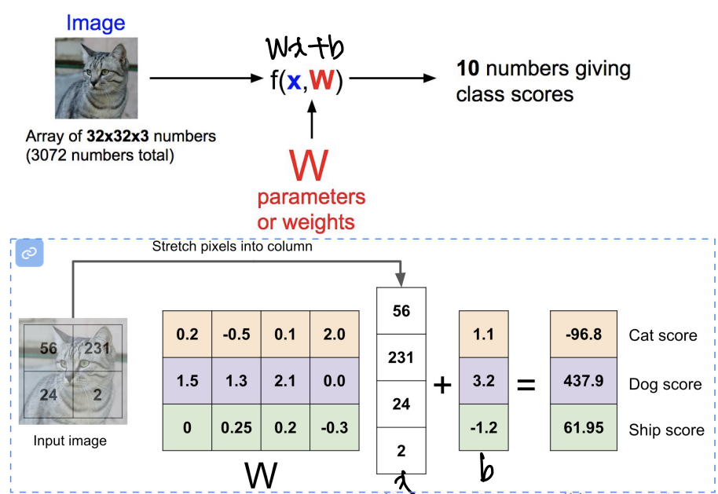
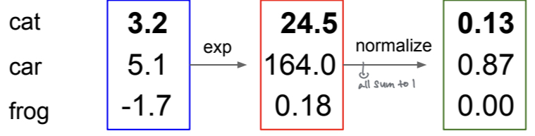

딥러닝의 Cross Entropy Loss 이해하기 (1)
import torch.nn as nn
loss=nn.CrossEntropyLoss()딥러닝을 공부하다보면 위와 같이 cross entropy로 loss를 정의하는 경우를 자주 볼 수 있습니다. 오늘은 이 cross entropy라는 손실 함수가 어떤 손실을 계산하는 것인지, 딥러닝 모델 전체에서 어떻게 작동하는지, 그리고 통계학에서 자주 등장하는 Negative log likelihood와는 어떤 관계가 있는지 알아보도록 하겠습니다.
정보이론에서 Cross Entropy
Cross Entropy는 정보이론에서 등장하는 개념으로, 두 확률분포 간의 차이를 측정하는 함수입니다.
$$H(P;Q)=E_{x}h_Q{x}=\sum\limits_{x\in A_x}P(x)log\frac{1}{Q(x)}=-\sum\limits_{x\in A_x}P(x)log{Q(x)}$$수식을 통해 조금 더 구체적으로 정리해보자면 주어진 분포 P로 분포 Q를 근사하기 위한 정보량의 평균($E_{x}h_Q{x}$)을 의미하는데, 이걸 설명하기 위해서는 정보이론의 information content, entropy 개념까지 들어가야 하기 때문에 추후 다른 글로 다뤄보겠습니다(잘 몰라서 미루는것 맞습니다 ..)!
위 수식에서 짚고 넘어가야 할 부분은 다음과 같습니다.
- Cross Entropy H(P;Q)는 실제 확률분포 P에 대해 예측 확률 분포 Q의 차이를 측정하는 함수입니다.
- 확률분포 P,Q가 동일할때(모든 x에 대해 P(x)=Q(x)일 때) cross entropy H(P;Q)가 최소가 됩니다.
- Cross entropy를 loss(손실함수)로 생각할 때의 목표는 Q를 P에 최대한 근사시키는 것이므로, cross entropy를 최소화하는 방향이 이상적이게 됩니다.
추가로 알아두면 좋은 것은, Cross entropy는 non-negative, non-symmetric한 함수입니다.
딥러닝의 Cross Entropy Loss
그렇다면 딥러닝에서는 왜 Cross Entropy Loss를 사용할까요?
딥러닝의 학습 과정이 실제 확률 분포 P에 딥러닝 모델이 예측한 확률 분포 Q를 근사시키는 과정이기 때문입니다.
이해를 돕기 위해 classfication 모델을 예로 들겠습니다.
classfication 모델의 Problem setting은 다음과 같습니다. x: 각 데이터 샘플(이미지 classification이라면 이미지 한장한장) y: 분류하고자 하는 데이터 label(예를 들어 개, 고양이, ..)
이때 classification 모델의 목표는 데이터 x가 들어올 때 x의 label y를 맞추는 것이고, 그 과정은 아래와 같습니다.
 출처 : cs231n 2017
{kind=link}
고양이 이미지 x가 모델 f(x,W)를 들어오면, label y 10개에 대한 score를 구하고, 가장 score가 높은 y로 분류가 됩니다. 모델은 W를 parameter로 가져서, 정답 class에 대한 score가 가장 높도록 W를 update하며 학습됩니다. W를 update하기 위해서는 지금 모델의 결과값이 얼마나 맞고 틀린지를 측정할 수 있는 loss가 필요합니다.
Loss는 여러 방법으로 설정할 수 있지만, 현대의 딥러닝에서는 확률분포의 개념을 가져와 loss를 측정합니다.
위에서 x가 들어왔을 때 올바를 y의 score를 높이는 과정을 x가 들어왔을 때 y가 나올 확률, 즉 P(y|x)를 높이는 것으로 해석해봅시다. 즉, cat score, dog score, ship score 중 가장 score가 높은 y를 선택하는 것을 P(cat|x), P(dog|x), P(ship|x)를 구하고, 가장 확률이 높은 y를 선택하는 것으로 볼 수 있습니다.
이 경우 정답 확률분포는 바로 P(cat|x)=1이 되고, P(car|x)=0, P(frog|x)=0를 만족하는 P(y|x)가 됩니다.
그렇다면 모델의 확률분포는 어떻게 구할 수 있을까요? 확률분포의 성질은 다음과 같습니다.
- 값이 항상 양수
- 모든 확률을 합했을 때 1이 된다.
모델의 확률분포를 구하기 위해, 위에서 구한 label별 score를 softmax라는 함수를 사용해서 확률로 해석할 수 있게끔 합니다. Softmax 함수는 다음과 같습니다.
$$ \sigma(\mathbf{z})_i = \frac{e^{z_i}}{\sum_{j=1}^K e^{z_j}} $$ 수식이 복잡하지만 위의 사진과 같이 1. 각 값의 exponential을 구하고 2. normalize해서 합이 1이 되도록 만든다. 로 생각하시면 됩니다.
{kind=link}
Softmax 함수를 통해 label별 score를 P(y|x)의 확률분포로 해석할 수 있습니다! 또 이 확률분포는 score에서 왔기 때문에, W의 영향을 받습니다. 따라서 모델이 예측한 확률분포 Q=P(y|x;W)라고 표기할 수 있습니다.
정리하면,
- classification을 확률분포로 해석하면 구하고자 하는 것은 P(y|x)
- P(y|x)의 실제 확률분포를 P, 모델이 구한 확률분포를 Q라하면
- P에서는 P(정답|x)=1, P(오답|x)=0
- Q는 P(y|x;W)로 P에 가까워지도록 W를 조정
이제 위로 올라가서 Cross Entropy의 다시 봅시다.
- Cross Entropy H(P;Q)는 실제 확률분포 P에 대해 예측 확률 분포 Q의 차이를 측정하는 함수입니다.
- 확률분포 P,Q가 동일할때(모든 x에 대해 P(x)=Q(x)일 때) cross entropy H(P;Q)가 최소가 됩니다.
- Cross entropy를 loss(손실함수)로 생각할 때의 목표는 Q를 P에 최대한 근사시키는 것이므로, cross entropy를 최소화하는 방향이 이상적이게 됩니다.
즉 P와 Q의 Cross entropy를 최소화하는 방식이 딥러닝 모델의 loss와 잘 맞게 됩니다!
다음 포스트에서는 Cross Entropy Loss와 Negative Likelihood Loss의 관련성에 대해 설명하면서 실제로 loss를 구하는 수식까지 알아보도록 하겠습니다!